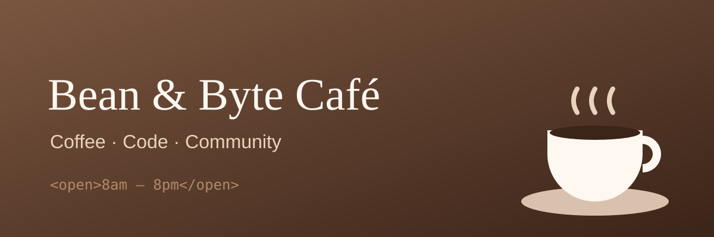

Fresh coffee. Fast Wi-Fi.
Your study spot at UNIMAS.
See our menu Order aheadAbout us
Your study spot at UNIMAS. We serve freshly roasted coffee, homemade pastries and the fastest Wi-Fi on campus. Bring your laptop and stay a while.
Opening hours
- Monday – Friday 8:00 am – 8:00 pm
- Saturday 9:00 am – 6:00 pm
- Sunday Closed
Find us
Near the main library
UNIMAS, Kota Samarahan
Sarawak